Primary HI summaries give each reconstructed path equal weight. Same-BPM comparison. 50 cc: 120 BPM, cardiac output not supplied. Frozen-flow snapshots; no transient path stitching or whole-cycle integration.
Compare the bulk and tail of SA, using Marom's linear-axis distribution approach.
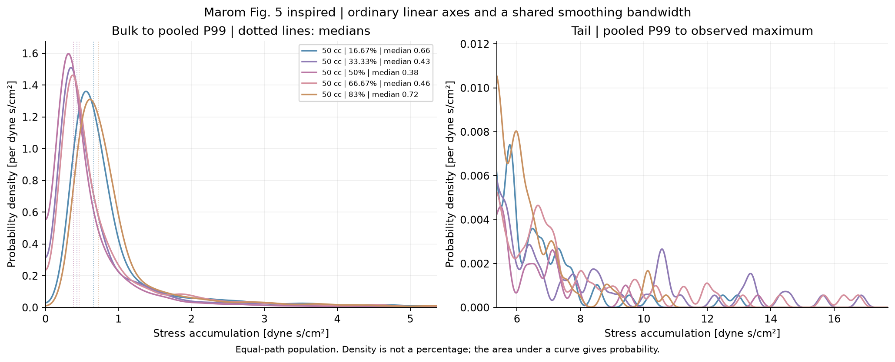
Read the fraction of paths above an SA cutoff directly; inspect the highest-exposure minority.
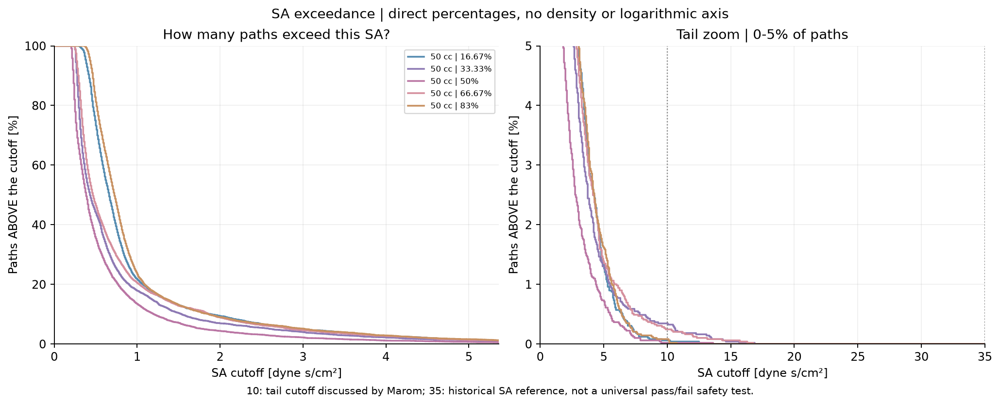
Check whether model/constant choices preserve or change phase and device rankings.
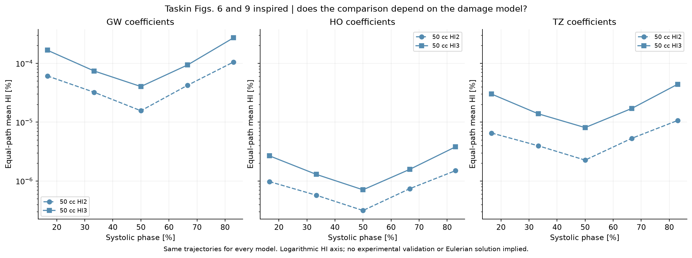
Distinguish inlet-speed weighting from the physical speed/residence-time relationship on individual paths.
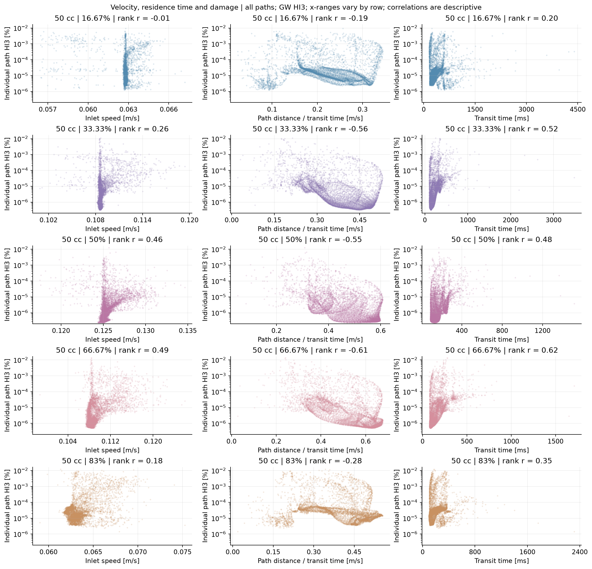
Separate residence-time effects from stress magnitude; colour shows path damage.
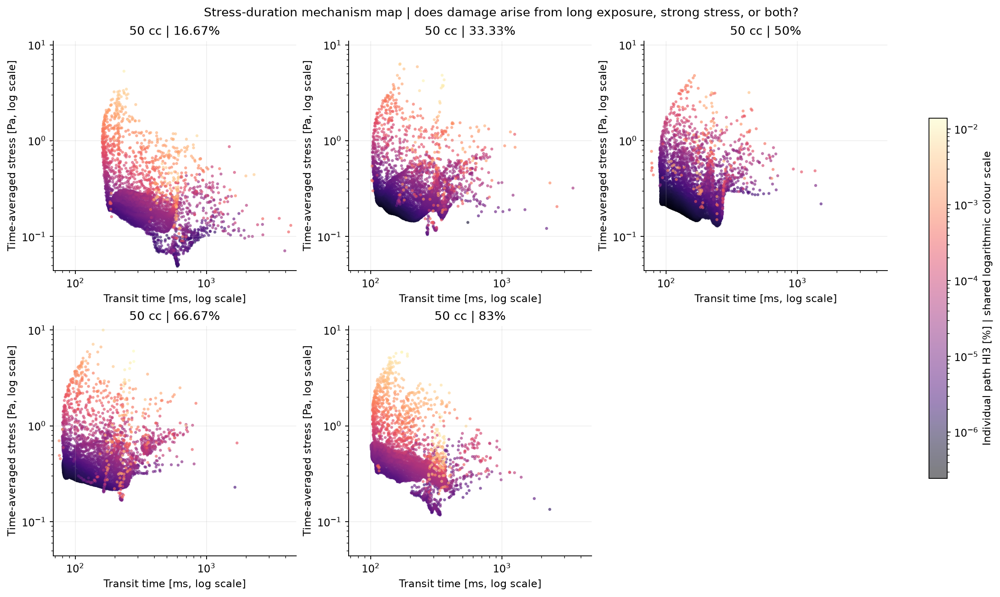
Locate the stress bursts that produce typical versus high path damage, with objective rank-based selection.
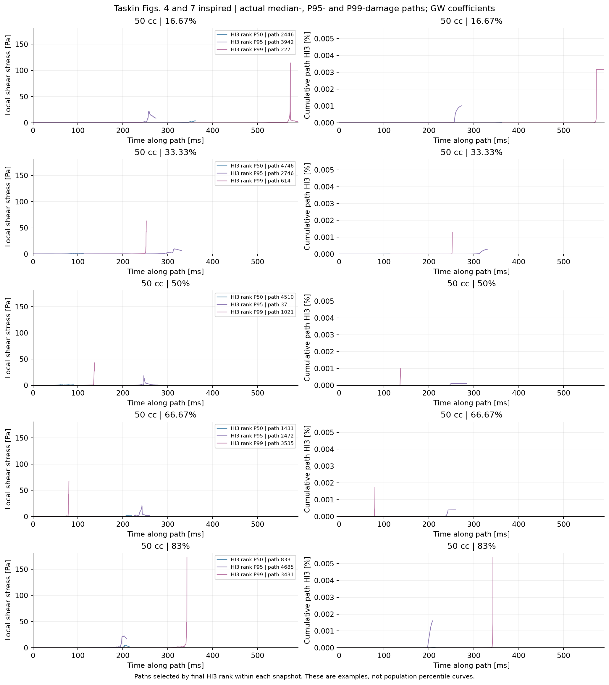
Find sampled high-stress regions; keep equal spatial scales when comparing sizes.
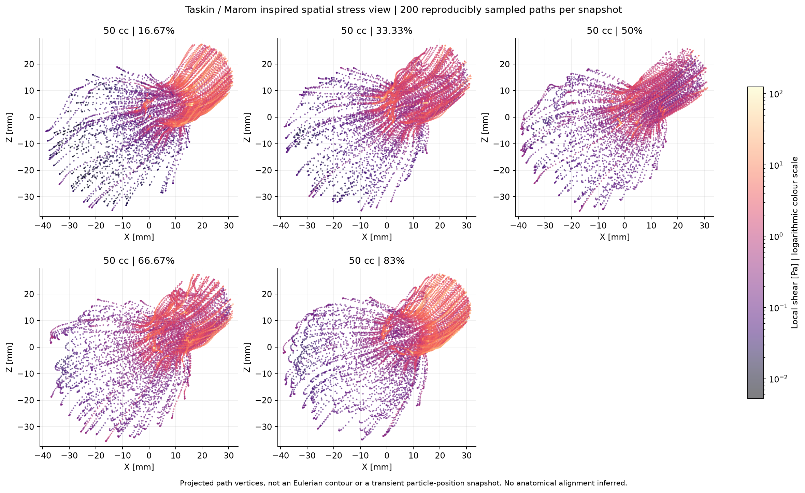
Quantify the contribution of high-damage paths; this is a share of modelled path HI, not measured haemoglobin mass.
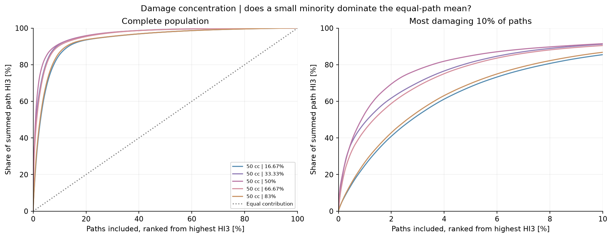
Quantify how much the inlet-speed proxy changes the reported mean, without making it the primary estimate.
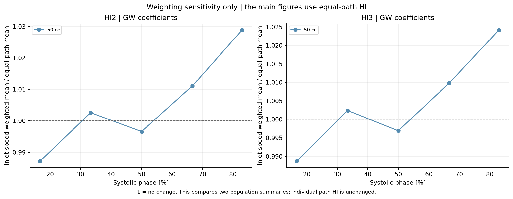
Explain why short strong-stress exposures can dominate damage despite low mean stress.
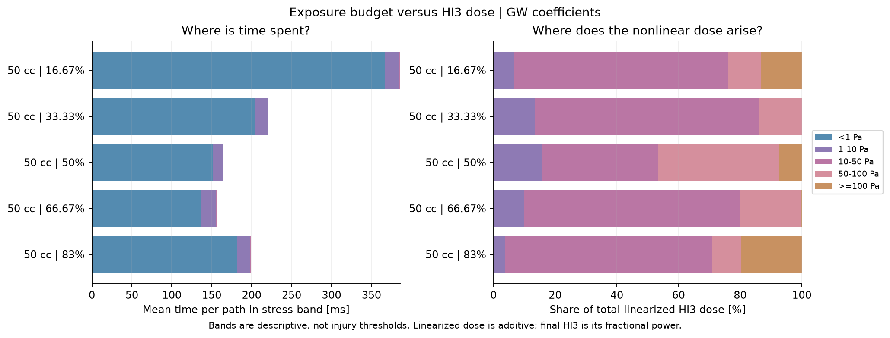
Check whether observed device differences exceed variability from subsampling the existing paths.
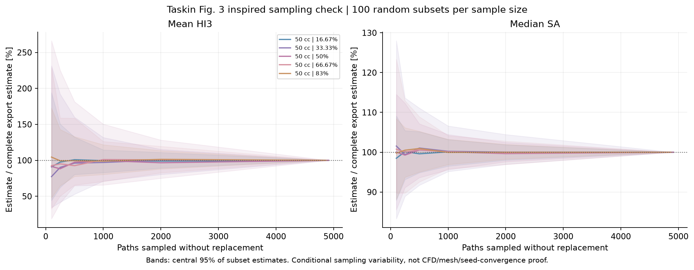
Separate changes in predicted haemolysis, accumulated stress, residence time and stress peaks.
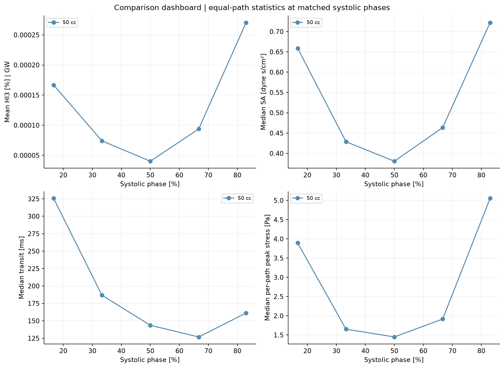